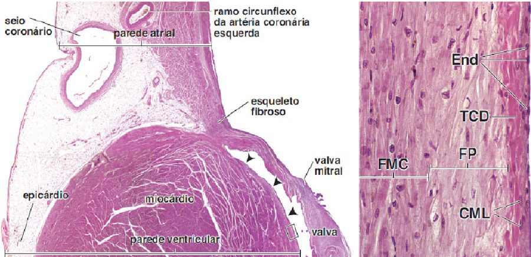
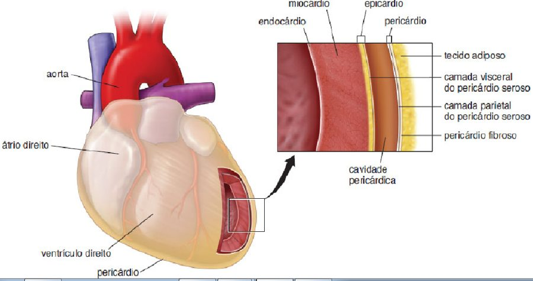
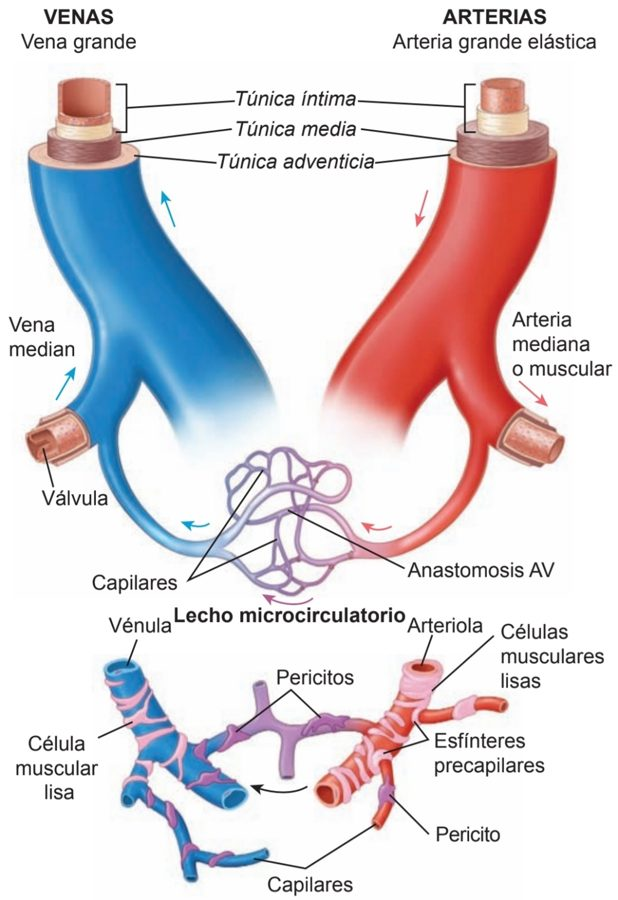
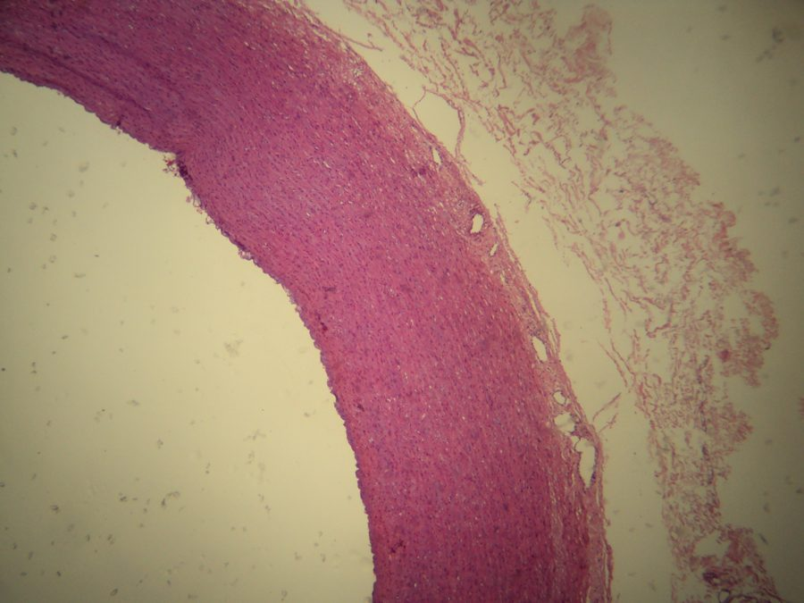
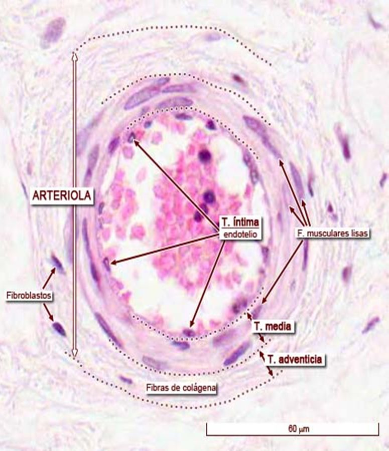
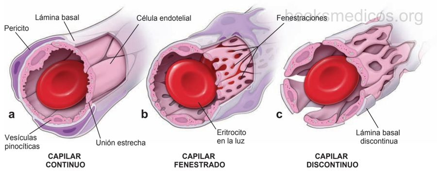
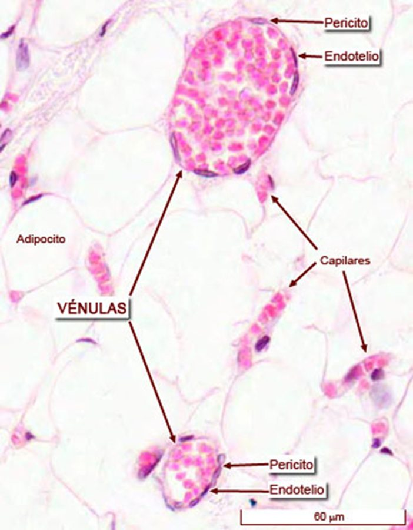
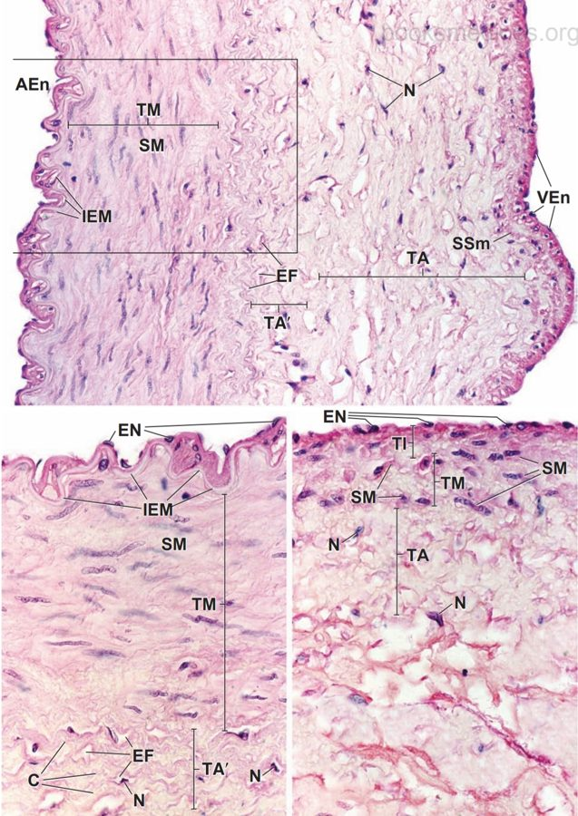
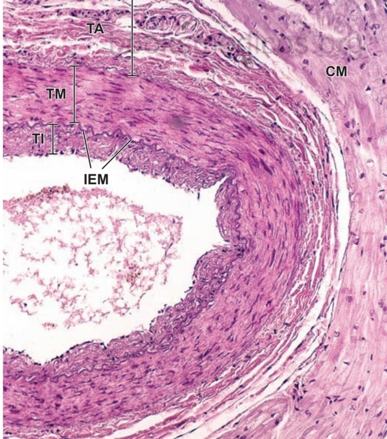

ClinicusMed · Dossiê Clinicus — Padrão de Excelência
Sistema = conjunto de órgãos. Cardiovascular = Cardio (Coração) + Vascular (Vasos Sanguíneos).
| Território | Característica |
|---|---|
| Macrovascular | Visível a olho nu — Coração, Artérias e Veias |
| Microvascular | Só visível ao microscópio — Arteríolas, Capilares e Vênulas |

| Esqueleto Fibroso |
|---|
| 4 Anéis fibrosos (4 válvulas) + 2 Trígonos Fibrosos |
| Camada | Composição |
|---|---|
| Epicárdio | = Pericárdio Visceral. Camada EXTERNA — mesotélio + Tecido Conectivo |
| Miocárdio | Camada MÉDIA, muscular — Cardiomiócitos (músculo estriado cardíaco) |
| Endocárdio | Camada INTERNA — endotélio + Tecido Conectivo |

| Estrutura | Detalhe |
|---|---|
| Mesotélio | Epitélio plano simples que recobre cavidades. Abaixo: Tecido Conectivo Submesotelial (laxo) → mais embaixo: capa Subepicárdica |
| Endotélio | Abaixo: capa Subendotelial (T.C. Laxo) → mais embaixo: capa Subendocárdica (onde ficam as Fibras de Purkinje, no ventrículo) |


| Túnica | Função | Composição Principal |
|---|---|---|
| Íntima | Contato com o sangue | Endotélio + lâmina basal |
| Média | Controle do diâmetro vascular | Músculo liso + fibras elásticas |
| Adventícia | Suporte e nutrição externa | Tecido conjuntivo + vasa vasorum (grandes vasos) |
| Aspecto | Detalhe |
|---|---|
| Composição | Endotélio (epitélio simples pavimentoso) + Lâmina basal + Camada subendotelial (T.C. laxo) |
| Em artérias | Pode ter lâmina elástica interna |
| Função | Regula trocas gasosas, secreções vasculares, evita coagulação |
| Aspecto | Detalhe |
|---|---|
| Composição | Músculo liso (predominante) + fibras elásticas (++++) e colágenas |
| Em artérias | Pode ter lâmina elástica externa |
| Função | Controla o diâmetro do vaso (vasoconstrição/vasodilatação), ajudando no controle da pressão arterial |
| Geralmente | A camada MAIS ESPESSA |
| Aspecto | Detalhe |
|---|---|
| Composição | T.C. laxo (colágeno+elásticas) + vasa vasorum (nutrem a parede) + fibras nervosas (nervi vasorum) |
| Função | Fixar o vaso aos tecidos vizinhos e nutrir as porções externas da parede |
| Em veias grandes | É a camada MAIS ESPESSA |
| Tipo | Características | Exemplo |
|---|---|---|
| Artérias Elásticas | Grande calibre, amortecem a pressão | Aorta, carótida comum |
| Artérias Musculares | Regulação do fluxo por vasoconstrição | Femoral, radial, coronária |
| Arteríolas | Controlam o fluxo capilar | Pequenos vasos terminais |
| Capilares | Troca de gases e nutrientes | Pulmão, músculo, rim |
| Vênulas | Saída dos capilares, início do retorno venoso | — |
| Veias | Retornam o sangue ao coração, COM válvulas | Veia cava, safena |




| Tipo | Estrutura | Função/Localização |
|---|---|---|
| Contínuos | Endotélio e lâmina basal CONTÍNUOS | SNC, músculo, pulmão |
| Fenestrados | Poros no endotélio | Rim, intestino delgado, glândulas endócrinas, vesícula biliar |
| Sinusoides | Grandes lacunas, DESCONTINUIDADE | Fígado, baço, medula óssea |
| Vaso | Particularidade |
|---|---|
| Artérias Coronárias | Túnica média mais grossa |
| Seios Venosos Durais | Poucas células musculares lisas (são espaços na duramáter) |
| Veia Safena Magna | Bastante musculatura lisa |
| Veia Central da Suprarrenal | Fascículos de músculo liso longitudinais (almofadas musculares) |

| Aspecto | Detalhe |
|---|---|
| Estrutura | Paredes finas: endotélio simples pavimentoso + pouco T.C. + poucas fibras musculares lisas (conforme calibre) |
| Válvulas | Presentes — garantem fluxo UNIDIRECIONAL |
| Hemácias | AUSENTES no lúmen |
| Permeabilidade | ALTA — absorve líquidos, proteínas e lipídios |
| Tipo | Característica |
|---|---|
| Capilares Linfáticos | Muito permeáveis, endoteliais sobrepostos, SEM lâmina basal contínua (ex: lácteos do intestino, absorvem gordura) |
| Vasos Linfáticos Coletores | Túnicas mais definidas e válvulas |
| Ductos Linfáticos | Ducto torácico e ducto linfático direito — desembocam nas veias subclávias |
Vamos acompanhar um paciente com dor torácica, relacionando o caso à histologia das túnicas arteriais. O caso evolui em 3 níveis — clica em cada um pra ver como as coisas vão se desenrolando.
O sistema guarda, no seu navegador, quais cards você já sabe bem e quais precisam voltar mais cedo — cada vez que você avalia um card, ele recalcula quando ele deve voltar.
10 questões, do mais básico ao mais puxado. Escolhe uma alternativa, depois clica em "Ver comentário completo" — vale a pena ler até quando você acerta, porque o comentário explica cada alternativa, não só a certa.
Todas as imagens desse capítulo, reunidas num só lugar pra revisão rápida.